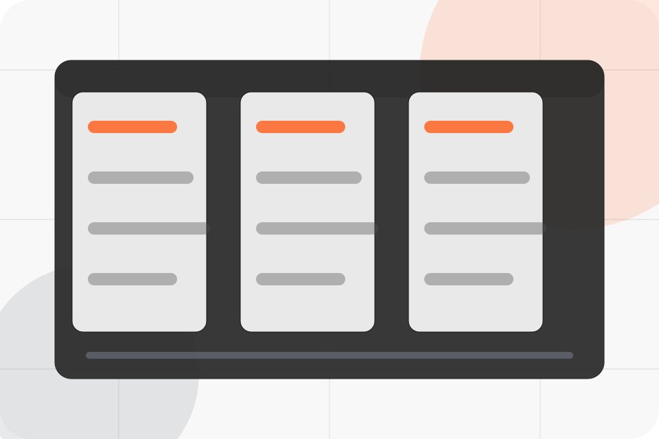

ASH-TRA static portfolio support
Page Not Found
The page could not be found. Use the sitemap, main navigation, or contact route to continue through the static site.

ASH-TRA static portfolio support
The page could not be found. Use the sitemap, main navigation, or contact route to continue through the static site.